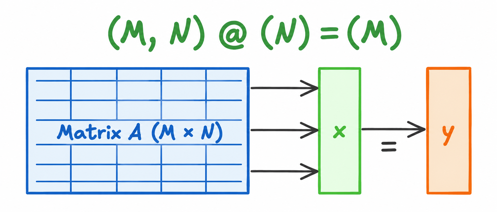
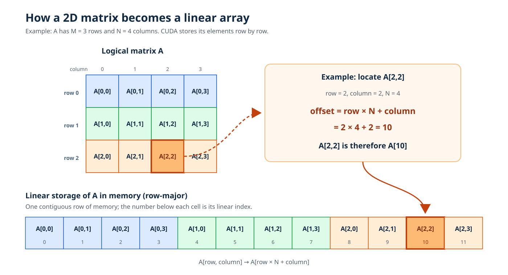
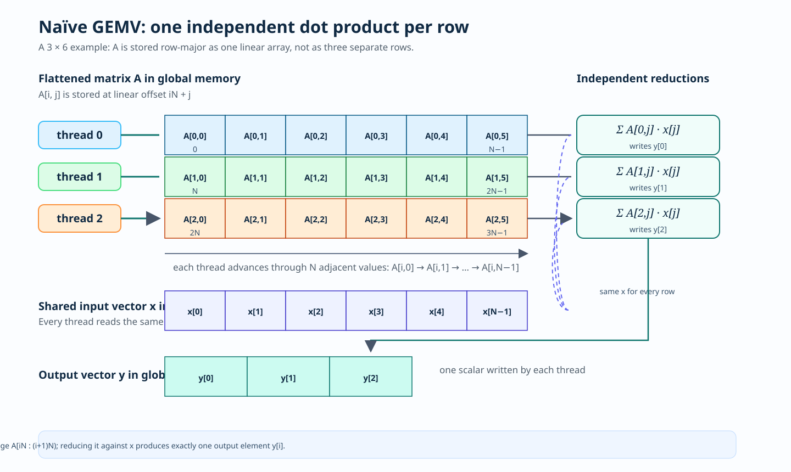
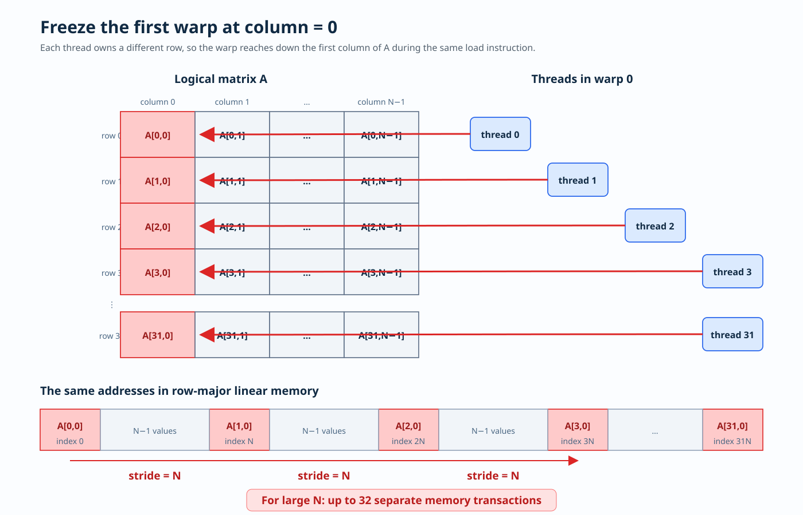
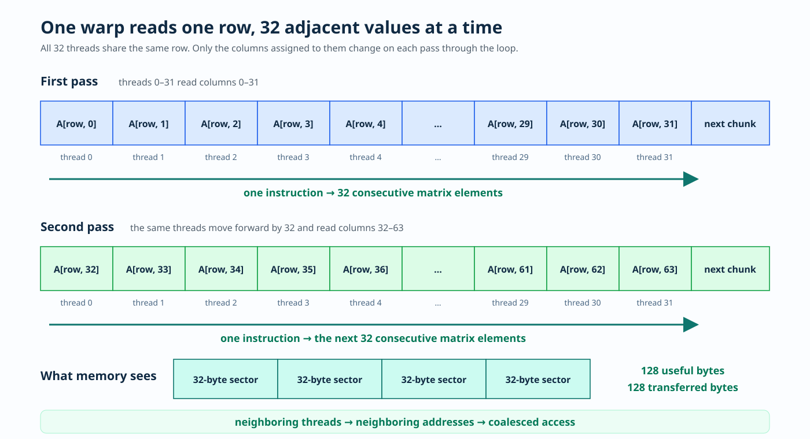

1 Making GEMV Fast
From a naïve CUDA kernel to coalesced memory access
The code for this chapter lives in kernels/gemv/.
GEMV means GEneral Matrix Vector multiplication. Which is nothing but muliplication of a matrix with a Vector.
In this worklog, we start from a naive kernel. Once we have done that we study this naive kernel and understand why it is not a performant one. By identifying the bottlenecks, we move on to implement a performant kernel that addresses all the concerns.
Formally our goal is to compute:
\[\mathbf{y}_{M \times 1} = \mathbf{A}_{M \times N} \cdot \mathbf{x}_{N \times 1}\]

1.1 Arithmetic intensity
Assume that all operands use FP32, so each element occupies 4 bytes. We also assume ideal memory behavior: the input vector \(\mathbf{x}\) is loaded once and retained in cache, while every element of \(\mathbf{A}\) is read exactly once.
1.1.1 Memory Access
| Operation | Elements transferred | Bytes transferred |
|---|---|---|
| Read matrix \(\mathbf{A}\) | \(MN\) | \(4MN\) |
| Read input vector \(\mathbf{x}\) | \(N\) | \(4N\) |
| Write output vector \(\mathbf{y}\) | \(M\) | \(4M\) |
| Total | \(MN+N+M\) | \(4(MN+N+M)\) |
1.1.2 Computation
For each row of \(\mathbf{A}\), the dot product performs \(N\) multiplications and \(N-1\) additions. Therefore, the exact computational cost is
\[ M\left(N+(N-1)\right) = M(2N-1) = 2MN-M \quad \text{FLOPs}. \]
The arithmetic intensity is the ratio of floating-point work to memory traffic:
\[ \begin{aligned} AI(M,N) &= \frac{\text{FLOPs}}{\text{bytes transferred}} \\ &= \frac{M(2N-1)}{4(MN+N+M)} \\ &= \frac{2MN-M}{4(MN+N+M)} \quad \text{FLOPs/byte}. \end{aligned} \]
When both \(M\) and \(N\) are large, \(MN\) dominates \(M\) and \(N\). Hence,
\[ AI(M,N) \approx \frac{2MN}{4MN} = \frac{1}{2} = 0.5 \quad \text{FLOPs/byte}. \]
That means we perform 1 floating point operation for every 2 bytes read from memory. This low arithmetic intensity makes GEMV memory-bound on most modern processors. Consequently, the rate at which the processor can read \(\mathbf{A}\) usually limits performance before its floating-point units are saturated. Under the roofline model, the maximum attainable performance is bounded by
\[ P \leq \min\!\left(P_{\text{peak}},\; AI \times B_{\text{memory}}\right), \]
where \(P_{\text{peak}}\) is peak compute throughput and \(B_{\text{memory}}\) is memory bandwidth. With \(AI \approx 0.5\) FLOPs/byte, a processor with memory bandwidth \(B_{\text{memory}}\) can sustain at most approximately \(0.5B_{\text{memory}}\) FLOPs/s for GEMV, unless the matrix is already resident in a faster level of the memory hierarchy.
Although we reason about \(\mathbf{A}\) as a two-dimensional matrix, it occupies one linear region of memory. CUDA lays out the entries row by row, so an entry at (row, column) has offset
\[ \operatorname{offset}(A_{\text{row},\text{column}}) = \text{row} \times N + \text{column}. \]
Equivalently,
\[ A_{\text{row},\text{column}} = A[\text{row} \times N + \text{column}]. \]
For example, when \(N=4\), the element \(A_{2,2}\) is found at
\[ 2 \times 4 + 2 = 10, \qquad A_{2,2} = A[10]. \]

1.1.3 Algorithm
GEMV has a particularly simple decomposition: every output element is the dot product of one row of \(\mathbf{A}\) with the same input vector \(\mathbf{x}\). For row \(i \in \{0, \ldots, M-1\}\),
\[ y_i = \sum_{j=0}^{N-1} A_{i,j}x_j. \]
The \(M\) dot products are independent, so we can assign row \(i\) to one thread: that thread reads row \(i\) of \(\mathbf{A}\), multiplies its entries by \(\mathbf{x}\), accumulates the products, and writes \(y_i\).

__global__ void naive_gemv_kernel(
const float* A,
const float* x,
float* y,
int M,
int N
) {
int row = blockDim.x * blockIdx.x + threadIdx.x;
if (row < M) {
float sum = 0.0;
for (int column = 0; column < N; ++column) {
sum += A[row * N + column] * x[column];
}
y[row] = sum;
}
}
void launch_kernel(
const float* __restrict__ A,
const float* __restrict__ x,
float* __restrict__ y,
int M,
int N
) {
dim3 block_size(1024);
dim3 grid_size(ceil_division(M, block_size.x));
naive_gemv_kernel<<<grid_size, block_size>>>(A, x, y, M, N);
}So, we just wrote a program that calculates the matrix vector product in parallel. Since we are doing in parallel we are gonna save so much time. Sounds neat and perfect right? Except it isn’t.
Remember what we discussed earlier while calculating Arithmatic Intesity? FLOPs and Memory. We might be doing all the computation efficiently, but turns out that we have overlooked a subtle thing, that defeats the optimization. It’s memory access pattern.
Now is the ideal time to introduce you to concept of warp. A warp is the fundamental execution unit on NVIDIA GPU (well AMD loves to call it wavefront). And each warp has exactly 32 threads. This holds true for all NVIDIA architectures (as of writing this article, Ampere, Hopper, Blackwell).
The important thing here is that GPUs can achieve high memory bandwidth by reading or writing a wide chunk of memory at once.
Let’s see what that means for the kernel we just wrote. Consider the first warp in the first block. Since blockIdx.x = 0, threads 0 through 31 are assigned rows 0 through 31. Now freeze all of them at the first loop iteration, where column = 0:
Thread 0: row = 0, accesses A[0 * N + 0] = A[0]
Thread 1: row = 1, accesses A[1 * N + 0] = A[N]
Thread 2: row = 2, accesses A[2 * N + 0] = A[2N]
Thread 3: row = 3, accesses A[3 * N + 0] = A[3N]
...
Thread 31: row = 31, accesses A[31 * N + 0] = A[31N]For this first warp, the thread number is also its row number. At any column, the linear index requested by a thread is simply
index = threadIdx.x * N + columnAt column = 0, this becomes threadIdx.x * N, giving us the sequence \(0,N,2N,\ldots,31N\) shown above.
See the problem? These 32 neighboring threads are not reading 32 neighboring elements. Every pair of threads is separated by an entire row - exactly \(N\) floats in memory.

For a typical case where \(N=8192\), thread 0 reads A[0] while thread 1 reads A[8192]. That is a gap of 8192 floats, or 32,768 bytes. Thread 2 is another 32,768 bytes away, and the same pattern continues across the entire warp.
Why is that bad? Because global memory is fetched in aligned chunks. When the 32 threads in a warp ask for consecutive FP32 values, their requests can be combined into just a few memory transactions. But here the requests are so far apart that, for a large \(N\), each thread can require a separate transaction. The GPU may need to perform as many as 32 memory transactions for one load instruction, even though each thread only wanted a single 4-byte value.
And this is not a one-time penalty. The same pattern repeats at column = 1, then column = 2, and so on for every column in the matrix:
\[ \begin{aligned} \text{column }0 &: 0,\;N,\;2N,\;3N,\ldots \\ \text{column }1 &: 1,\;N+1,\;2N+1,\;3N+1,\ldots \\ \text{column }2 &: 2,\;N+2,\;2N+2,\;3N+2,\ldots \end{aligned} \]
So although each individual thread walks through its own row sequentially, the warp as a whole performs a non-contiguous, strided access at every iteration. That is why this innocent-looking kernel leaves so much memory bandwidth on the table.
1.1.4 Okay, but how bad is bad?
We can actually connect this back to the arithmetic-intensity calculation from the beginning of the article.
The time spent moving data is approximately
\[ T_{\text{memory}} \approx \frac{\text{bytes transferred}}{\text{memory bandwidth}}. \]
This equation is almost painfully simple. If two kernels perform the same amount of arithmetic, but one of them forces the GPU to transfer more bytes, that kernel takes longer. And because GEMV is already memory-bound, there is very little computation available to hide that extra time.
Earlier, we calculated the ideal arithmetic intensity as 0.5 FLOPs/byte, which was already low.
Remember, it means that for every byte delivered by memory, the GPU gets only half a floating-point operation to perform. Or, said another way, we need roughly 2 bytes of memory traffic for every FLOP. Modern GPUs can perform arithmetic much faster than they can feed data from global memory, so a kernel with such low arithmetic intensity hits the bandwidth ceiling long before it reaches peak compute throughput.
But there is an important word hiding in our calculation: ideal.
This assumes that when GEMV asks for 4 bytes, only those useful 4 bytes are counted. In practice the memory transactions do not work at the granularity of one float. The GPU fetches aligned chunks of memory. If the rest of a fetched chunk is not used by the warp, those bytes still travelled through the memory system - we just got no computation out of them.
Let us describe this waste using memory-transaction efficiency:
\[ \eta_A = \frac{\text{useful bytes of }A} {\text{bytes actually transferred for }A}. \]
With perfectly coalesced matrix loads, \(\eta_A\) can approach 1. The warp uses almost everything it fetches. However, the access pattern we just used in our naïve kernel, gives:
\[ \eta_A = \frac{32 \times 4}{32 \times 32} = \frac{128}{1024} = \frac{1}{8} = 12.5\%. \]
So reading the \(4MN\) useful bytes of \(A\) may force the GPU to transfer
\[ \frac{4MN}{\eta_A} \]
bytes through the memory system. If we keep the same ideal caching assumption for \(x\) and note that the writes to consecutive elements of \(y\) are coalesced, our effective arithmetic intensity becomes
\[ AI_{\text{effective}} = \frac{M(2N-1)} {\frac{4MN}{\eta_A}+4N+4M}. \]
For large \(M\) and \(N\), the matrix term dominates everything else, so
\[ AI_{\text{effective}} \approx \frac{2MN}{4MN/\eta_A} = \frac{\eta_A}{2}. \]
Now we can see exactly how the access pattern makes an already memory-bound algorithm even worse:
\[ \begin{aligned} \text{coalesced }(\eta_A \approx 1) &: AI_{\text{effective}} \approx 0.5\ \text{FLOPs/byte},\\ \text{uncoalesced }(\eta_A \approx 1/8) &: AI_{\text{effective}} \approx 0.0625\ \text{FLOPs/byte}. \end{aligned} \]
We are performing the same FLOPs, but because of our choice of memory access now each useful matrix byte is costing us eight transferred bytes.
Contiguous access does not magically increase GEMV’s theoretical arithmetic intensity - it is still approximately \(0.5\) FLOPs/byte. What it does is stop bad memory transactions from reducing the effective arithmetic intensity even further. Coalescing gives us a chance to use the GPU’s available memory bandwidth instead of throwing most of it away.
That is now our target. GEMV will remain memory-bound, but if neighboring threads access neighboring elements, we can make those expensive memory transactions carry useful data. The next question is: how do we rearrange the work so that a warp walks across a row instead of jumping between rows?
1.1.5 What access pattern do we actually want?
In the naïve kernel, neighboring threads work on different rows. That is why their addresses are \(N\) elements apart.
What if we flip that around? Instead of giving an entire row to one thread, we give an entire row to one warp. All 32 threads now work on the same row.
Let us start with the first pass through the loop:
thread 0 -> column 0
thread 1 -> column 1
thread 2 -> column 2
...
thread 31 -> column 31Since all threads share the same row, they access
thread 0 -> A[row * N + 0]
thread 1 -> A[row * N + 1]
thread 2 -> A[row * N + 2]
...
thread 31 -> A[row * N + 31]These are 32 adjacent elements in memory. The distance between thread 0 and thread 1 is no longer \(N\) elements. It is exactly one element.
Once those first 32 columns are done, every thread moves forward by 32:
thread 0 -> column 32
thread 1 -> column 33
thread 2 -> column 34
...
thread 31 -> column 63So the second pass accesses
A[row * N + 32], A[row * N + 33], ..., A[row * N + 63]Again, the warp reads one contiguous chunk.
That gives us the only indexing rule we need:
column = threadIdx.x + 32 * pass
index = row * N + columnHere, pass simply means how many times the warp has gone through the loop: 0 for columns 0–31, 1 for columns 32–63, 2 for columns 64–95, and so on.
One thread jumps by 32 elements over time, but all 32 threads together access neighboring elements during every pass. This is the same subtle distinction we saw earlier, now working in our favour.

Under our 32-byte-sector model, 32 adjacent FP32 loads request 128 useful bytes and transfer 128 bytes:
\[ \eta_A^{\text{coalesced}} = \frac{32\times4}{4\times32} =1. \]
Plugging that back into the effective arithmetic intensity gives us
\[ AI_{\text{effective}} \approx \frac{\eta_A}{2} \approx 0.5\ \text{FLOPs/byte}. \]
Boom!
We did not make GEMV less memory-bound. All we did is to recover the best-case \(AI\) that GEMV was supposed to have in the first place. The naive mapping pushed it down towards \(0.0625\) FLOPs/byte; the coalesced mapping brings it back towards \(0.5\) FLOPs/byte and lets us make useful work out of the bandwidth the GPU is already spending.
There is one consequence of splitting a row across 32 threads: no single thread computes the complete dot product anymore.
Take a row with \(N=64\). During the first pass, the threads compute
thread 0 -> partial_sum += A[row, 0] * x[0]
thread 1 -> partial_sum += A[row, 1] * x[1]
thread 2 -> partial_sum += A[row, 2] * x[2]
...
thread 31 -> partial_sum += A[row, 31] * x[31]During the second pass, those same threads move forward by 32 columns:
thread 0 -> partial_sum += A[row, 32] * x[32]
thread 1 -> partial_sum += A[row, 33] * x[33]
thread 2 -> partial_sum += A[row, 34] * x[34]
...
thread 31 -> partial_sum += A[row, 63] * x[63]After the loop, thread 0 holds the contributions from columns 0 and 32, thread 1 holds the contributions from columns 1 and 33, and so on. The complete dot product is now spread across 32 different partial_sum values:
y[row] = partial_sum from thread 0
+ partial_sum from thread 1
+ ...
+ partial_sum from thread 31So fixing the memory access created one small cleanup job: before writing y[row], the warp must reduce its 32 partial sums into one final sum. We’ll handle this cleanup by our little utility function warpReduceSum below
1.1.6 Turning that access pattern into code
Alright, the mapping is clear now:
block 0 -> row 0 -> y[0]
block 1 -> row 1 -> y[1]
block 2 -> row 2 -> y[2]
...Each block contains exactly 32 threads, so one block is one warp. Inside that warp, thread 0 handles columns \(0,32,64,\ldots\), thread 1 handles columns \(1,33,65,\ldots\), and so on.
__device__ __forceinline__ float warpReduceSum(float value) {
for (int offset = 16; offset > 0; offset /= 2) {
value += __shfl_down_sync(0xffffffff, value, offset);
}
return value;
}
__global__ void performant_gemv_kernel(
const float* A,
const float* x,
float* y,
int M,
int N
) {
// Ensure block size equals warp size for optimal performance
assert(blockDim.x == warpSize);
int block_id = blockIdx.x;
if (block_id >= M)
return;
int thread_id = threadIdx.x;
float partial_sum = 0.f;
for (int column = thread_id; column < N; column += warpSize) {
partial_sum += A[block_id * N + column] * x[column];
}
float sum = warpReduceSum(partial_sum);
if (thread_id == 0){
y[block_id] = sum;
}
}
void launch_kernel(
const float* __restrict__ A,
const float* __restrict__ x,
float* __restrict__ y,
int M,
int N
) {
int num_threads = 32;
dim3 block_size(num_threads);
dim3 grid_size(M);
performant_gemv_kernel<<<grid_size, block_size>>>(A, x, y, M, N);
}Recall that a lane is a thread’s position inside its warp, numbered from 0 to 31. Since our block contains exactly one warp, thread 0 is lane 0, thread 1 is lane 1, and so on.
__shfl_down_sync lets one lane read a value held in another lane’s register. For example,
value += __shfl_down_sync(0xffffffff, value, 16);means that lane 0 adds the value from lane 16, lane 1 adds the value from lane 17, and so on. The loop repeats this operation with progressively smaller offsets:
offset 16 -> 32 partial sums become 16 groups of 2
offset 8 -> 16 groups become 8 groups of 4
offset 4 -> 8 groups become 4 groups of 8
offset 2 -> 4 groups become 2 groups of 16
offset 1 -> 2 groups become 1 group of 32After these five steps, lane 0 contains the sum of all 32 original partial_sum values. The complete sum is not available in every lane, which is why only thread 0 writes the result:
if (thread_id == 0) {
y[block_id] = sum;
}The naive kernel did not need this reduction, so yes, we have introduced some extra work. But for a row containing thousands of values, five register-level shuffle-and-add steps are a tiny price to pay for replacing scattered matrix loads with contiguous ones. We traded a little communication inside the warp for dramatically better use of global-memory bandwidth—which is exactly the trade a memory-bound kernel wants us to make.
1.2 Main takeaways
Alright, that was a lot for a matrix - vector multiplication. We started with what looked like an obviously parallel algorithm, found out that it was still slow, went all the way down to memory transactions, and then rearranged the work until the GPU finally got the access pattern it wanted.
If I had to compress the entire worklog into a few points, these would be the ones:
FLOPs are only half the story. GEMV has an \(AI\) of roughly \(0.5\) FLOPs/byte. That is already pretty low. The GPU is going to spend more time waiting for matrix values than multiplying them, so staring only at compute throughput tells us almost nothing useful here.
Throwing more threads at something does not automatically make it fast. Our first kernel was massively parallel, but every warp was jumping between rows in memory. We had plenty of threads doing work; we were just feeding those threads horribly.
Do not look at one thread and declare the access contiguous. Thread 0 really was walking through its row one element at a time. The catch was that the other 31 threads in its warp were walking through 31 completely different rows. What matters is what the whole warp requests at the same instant.
Sometimes the real optimization is simply changing who owns the work. We went from “one thread owns one row” to “one warp owns one row.” That one change turned addresses separated by \(N\) elements into adjacent addresses. Same matrix, same multiplication—much better memory behaviour.
Coalescing did not magically improve GEMV’s theoretical \(AI\). The best case is still around \(0.5\) FLOPs/byte. What coalescing did was stop the bad access pattern from dragging the effective \(AI\) towards \(0.0625\) FLOPs/byte. We did not create more bandwidth; we stopped wasting the bandwidth we already had.
Doing a little extra work can save a ridiculous amount of time. The new kernel needs five shuffle-and-add steps to combine the partial sums. That sounds like overhead—and it is—but it is tiny compared with repeatedly fetching memory chunks from which we use only one float.
And that is really the lesson here. For a memory-bound kernel, the clever part is not always reducing the number of FLOPs. Sometimes it is just making sure that every expensive byte brought from memory actually gets used.